Planta, corte, fachada, vista de parede e 3D de um ambiente. Em arquitetura, estrutura, elétrica e hidrossanitário. Ela mostra o que vai fazer e só cria depois do seu ok.
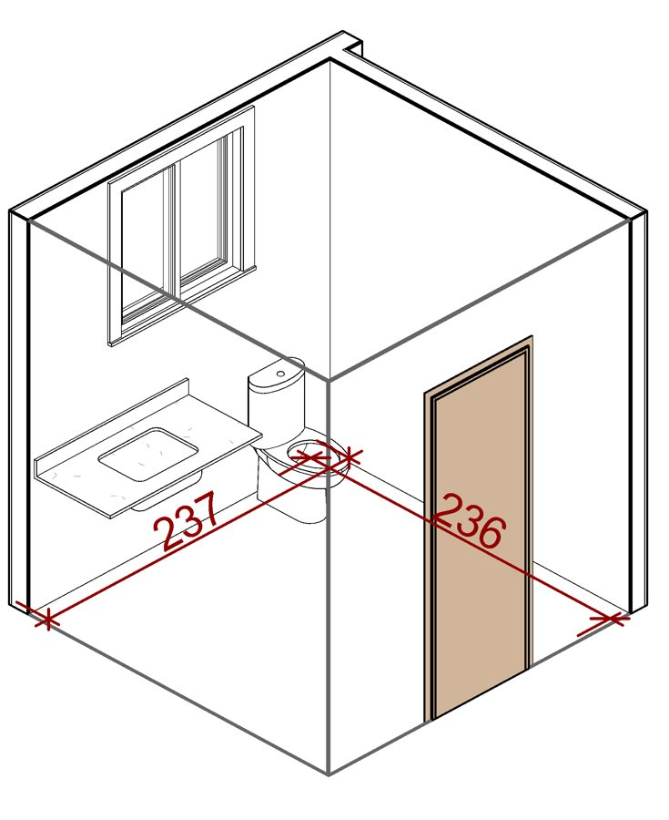
Cotar é repetição com regra. E repetição com regra a IA faz.
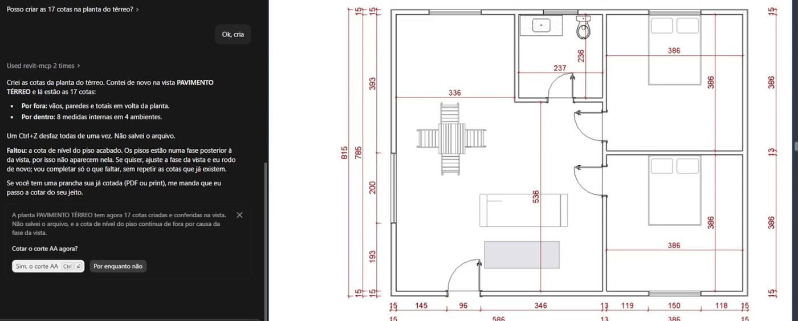
No fim, ela diz o que ficou para cotar à mão. Nada de cota inventada.
Cada vista tem o que importa nela. Na planta de arquitetura, vãos, paredes, total e nível do piso. No corte, pé-direito, peitoril e níveis. Na estrutura, eixos e locação de pilar. Na elétrica e na hidro, a posição e a altura de cada ponto.
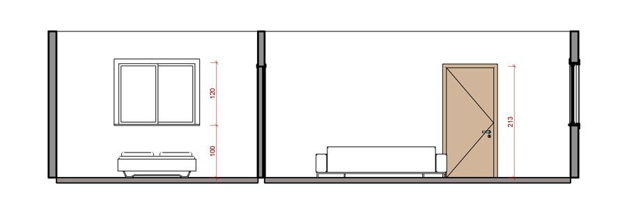
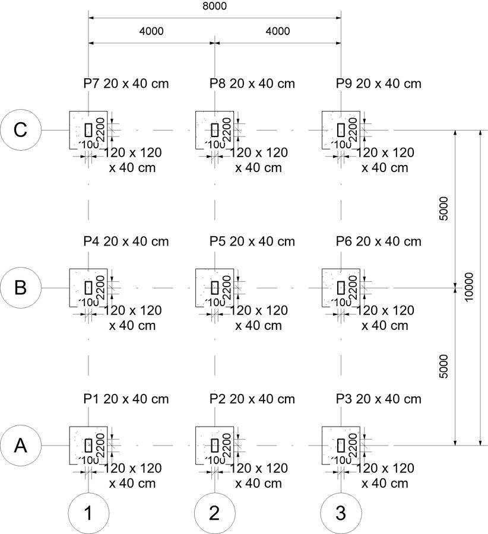
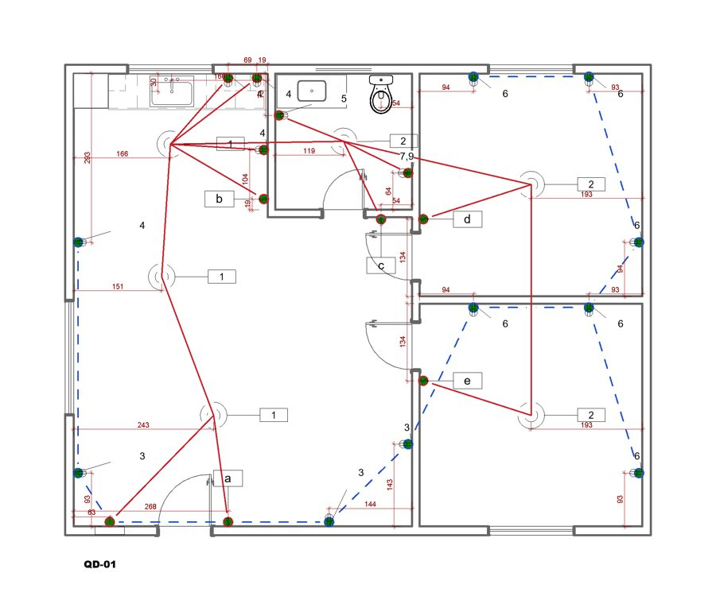
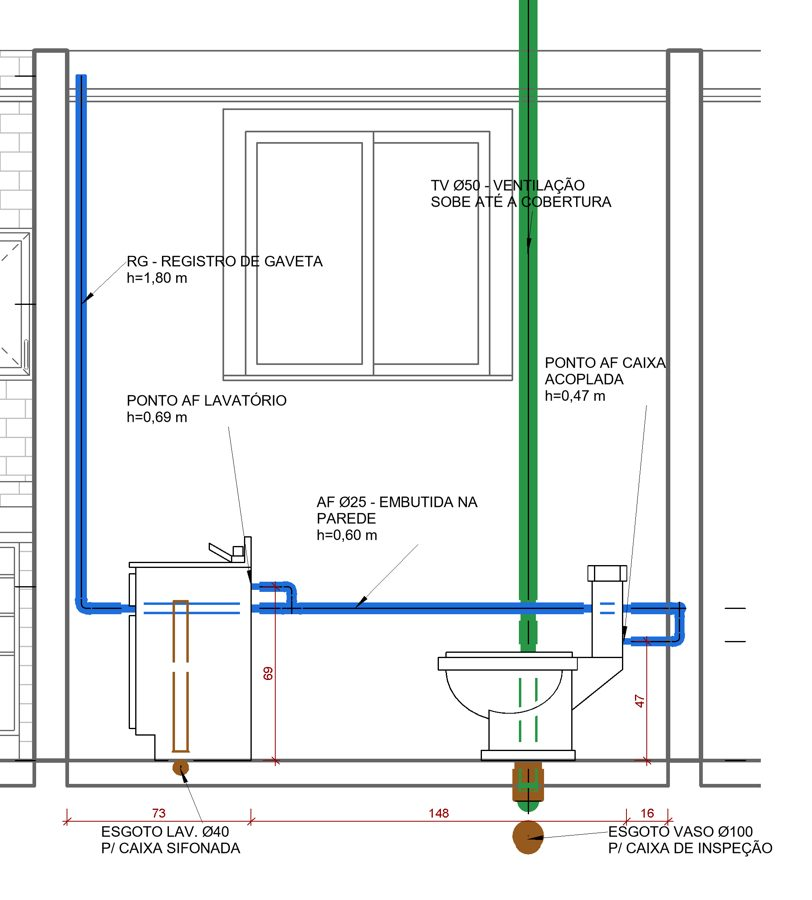
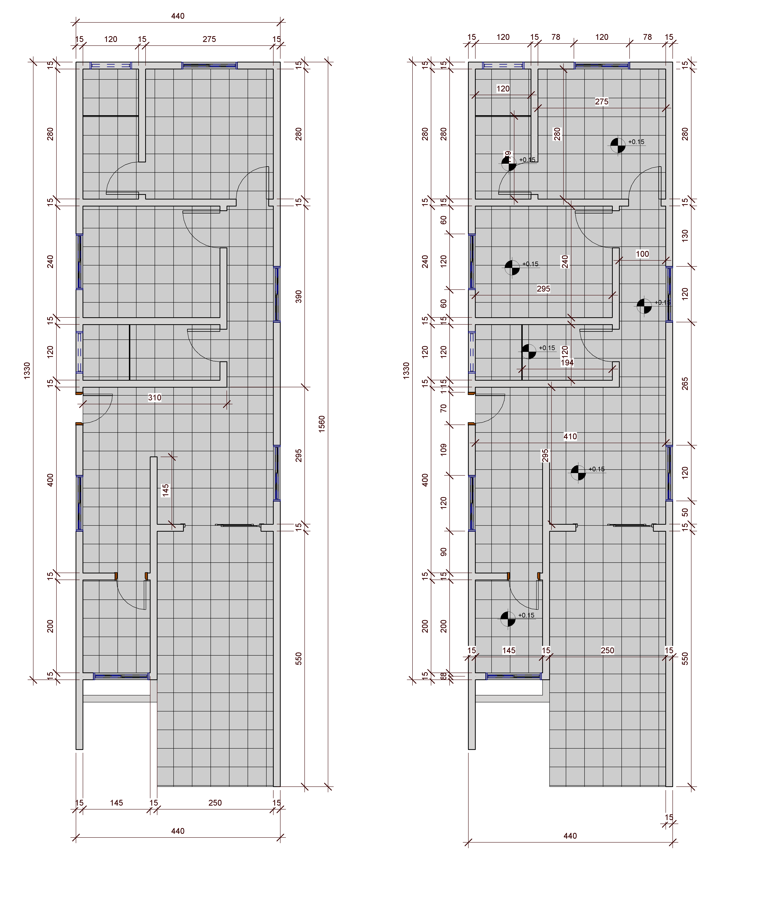
Ela mantém as suas cotas, completa o que falta e não repete medida.
Janela nova na revisão: ela troca só a corrente daquele lado, já com o vão novo.
E se você tem o seu jeito de cotar, manda uma prancha sua. Ela compara e pergunta se grava o seu padrão.
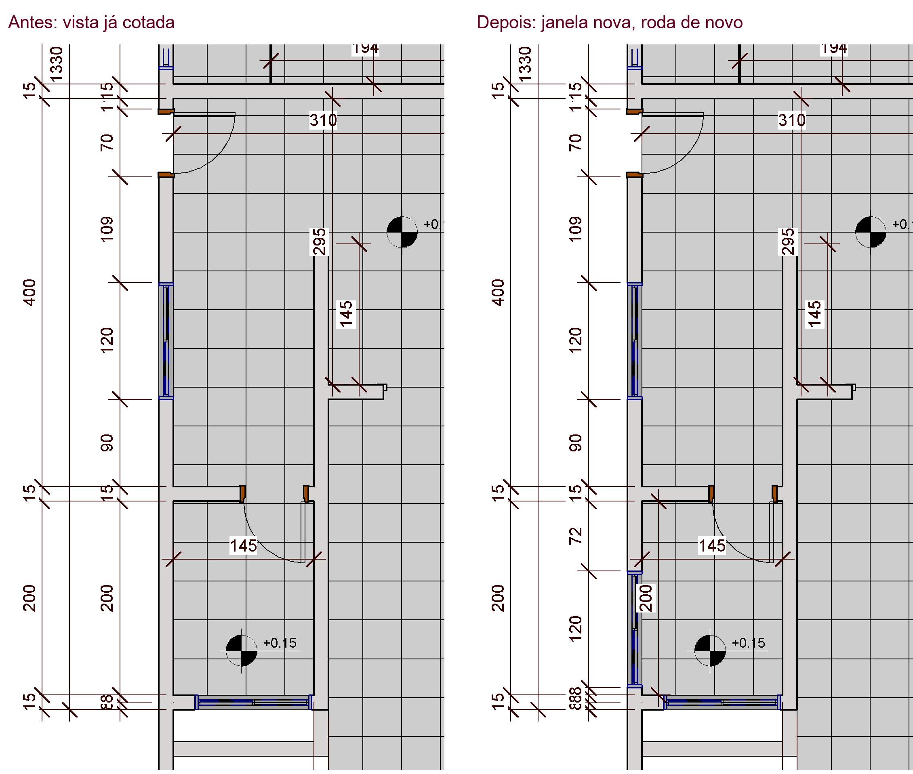
| Na mão | Com a IA | |
|---|---|---|
| Começar | Ativa a ferramenta, escolhe face por face | Escreve o que quer cotar |
| Corte e vista de parede | Ponto por ponto, altura por altura | Pé-direito, peitoris, níveis e pontos de uma vez |
| 3D | Monta a vista, trava, cota | Cria o 3D do ambiente já travado e cotado |
| Revisão | Refaz o trecho | Completa o que falta sem repetir |
| Controle | Você | Ainda você: ela mostra antes e só cria com o seu ok |
Você vai ouvir estas três palavras na página e nas aulas. Nenhuma exige saber programar.
A inteligência artificial com quem você conversa, como num chat. Você escreve em português o que quer, e ele faz.
É como um cabo USB: liga o Claude ao seu Revit. Sem ele, o Claude não enxerga o seu projeto. É gratuito e você instala uma vez.
Quer dizer "habilidade". É o que ensina o Claude a cotar sempre da melhor forma e do mesmo jeito, em toda vista. É isso que você compra aqui.
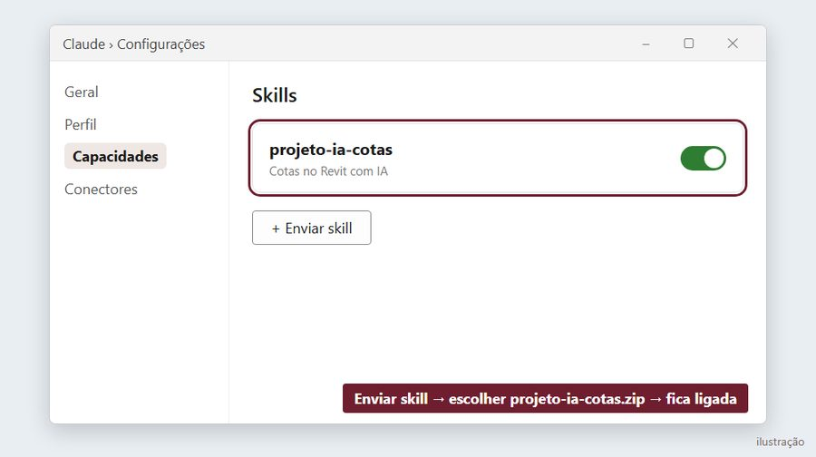
A habilidade que ensina o Claude a cotar sempre da melhor forma e do mesmo jeito, nas quatro disciplinas. Você instala uma vez no Claude Desktop.
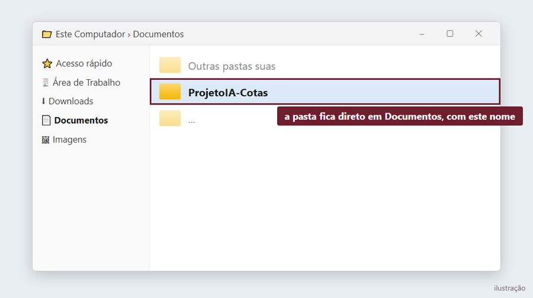
Uma pasta que fica no seu computador. É ela que cria as cotas no Revit, e por isso cada pedido gasta pouco do seu plano do Claude.
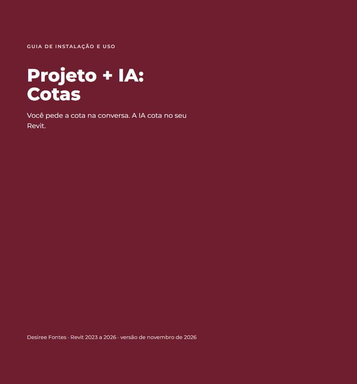
Um PDF com prints reais, passo a passo: do conector gratuito do Revit até a primeira vista cotada, e o que fazer se travar.
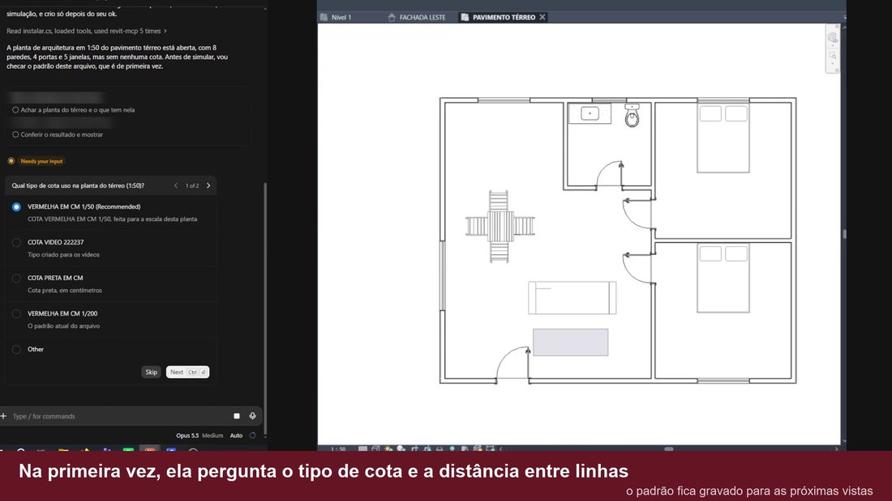
Seis aulas curtas, já na área de membros: instalar o conector, a pasta e a skill; a primeira vista cotada; e a revisão, o corte e o 3D.
E suporte direto comigo pelo WhatsApp até você conseguir usar.
Eu mesma respondo e te acompanho até a primeira vista sair cotada. Manda o print do que apareceu no Claude, que fica mais rápido.